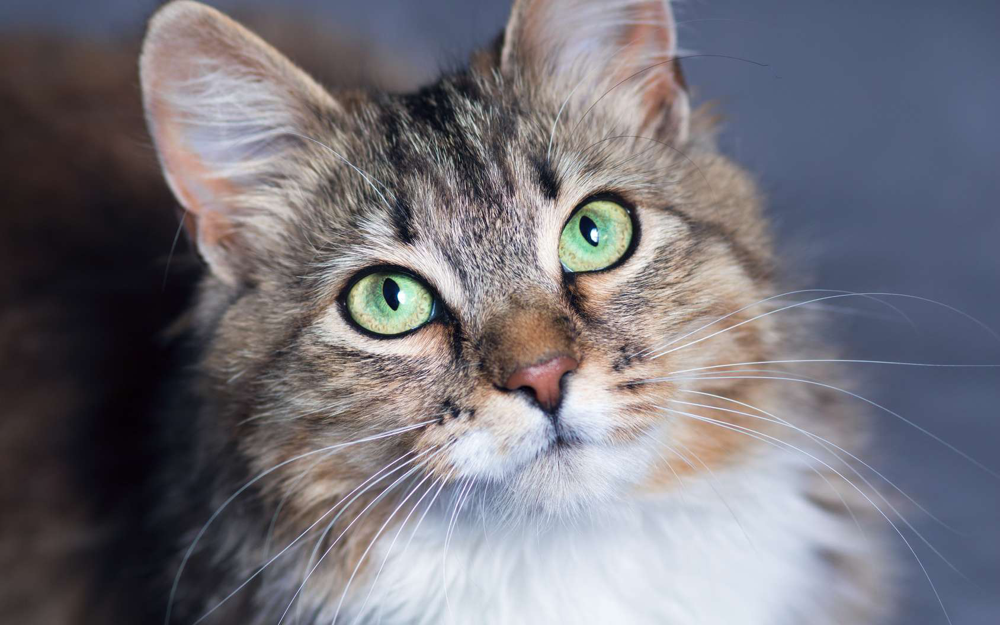

Le Chat
Le chat domestique (Felis catus ou Felis silvestris catus) est la forme domestique du chat sauvage Felis silvestris, une espèce de mammifères carnivores, de la famille des Félidés. Selon les résultats de travaux menés en 2006 et 20071, le chat domestique est une sous-espèce du chat sauvage issue d’ancêtres appartenant à la sous-espèce du chat sauvage d’Afrique (Felis silvestris lybica). Les premières domestications ont probablement lieu il y a 8 000 à 10 000 ans au Néolithique dans le Croissant fertile, époque correspondant au début de la culture de céréales et à l'engrangement de réserves susceptibles d'être attaquées par des rongeurs, le chat devenant alors pour l’Homme un auxiliaire utile se prêtant à la domestication.

Le chat domestique est l’un des principaux animaux de compagnie et compte aujourd’hui une cinquantaine de races différentes reconnues par les instances de certification. Dans de très nombreux pays, le chat entre dans le cadre de la législation sur les carnivores domestiques à l’instar du chien et du furet. Essentiellement territorial, le chat est un prédateur de petites proies comme les rongeurs ou les oiseaux. Les chats ont diverses vocalisations dont les ronronnements, les miaulements, les feulements ou les grognements, bien qu’ils communiquent principalement par des positions faciales et corporelles et des phéromones.
Tout d’abord vénéré par les Égyptiens, il est diabolisé en Europe au Moyen Âge et ne retrouve ses lettres de noblesse qu’au XVIIIe siècle. En Asie, le chat reste synonyme de chance, de richesse ou de longévité. Ce félin laisse son empreinte dans la culture populaire et artistique, tant au travers d’expressions populaires que de représentations diverses au sein de la littérature, de la peinture ou encore de la musique. À partir de la fin du XXe siècle, les dommages qu'il occasionne à la biodiversité sont mieux compris, et il fait partie des cent espèces envahissantes parmi les plus nuisibles du monde.
Denomination
Le chat domestique mâle est couramment appelé un « chat » tandis que la femelle est appelée « chatte »2 et le jeune un « chaton »3,4,5. L'origine du mot chat est controversée. L'une des hypothèses est que le mot chat vient du bas latin cattus, qui, d’après le Littré (édition de 1878), provient du verbe cattare, qui signifie guetter, ce félin étant alors considéré comme un chasseur qui guette sa proie. Cette interprétation porte cependant à controverse. On retrouve des racines du mot à rapprocher dans certaines langues chamito-sémitiques (afro-asiatiques) : en copte (bohaïrique) ϣⲁⲩ, šau (prononcé chaou ou chaw/shaw) « matou », peut-être issu de l’égyptien moyen tešau « chatte », le nom donné à la femelle est retrouve gravé au pied des statuettes funéraires égyptiennes placées dans les tombes des femmes et à partir partir de ce terme pourrait découler l’appellation de « chaus »6. Dans les langues berbères - issues de la même famille linguistique - les termes mucc (mouch), amucc (amouch) et amcic (amchich)7 tirés de la racine MCW (MCHW) donnent une racine commune qui devient visible si l'on retire le préfixe berbère am- ou m- : CW (CHW). Dans la langues tchadiques, on retrouve gāda en afade8, et dans les langues nilo-sahariennes kadiska8 ou kadis9 en nubien, probablement influencé par l'égyptien ancien. Le terme arabe qitt pourrait provenir de la même source10. En latin classique, « chat » se dit felis (d’où, en français, félin, félidés, etc.), mais désigne uniquement le chat sauvage d’Europe, tandis que cattus s’applique au chat domestique11. Une autre hypothèse relie le terme à un mot germanique ancien ou d'une langue européenne du Nord qui fut absorbé en latin puis en grec, syriaque et arabe12 : en germanique et dans les langues européennes du Nord emprunté de l'ouralien, du sami septentrionali gáđfi, « hermine » et hongrois hölgy, « dame, hermine » du proto-ouralien *käďwä, « femelle » (d'un animal à fourrure)13.

On désigne aussi plus familièrement le chat par minet ou minou et la chatte par minette. Ce terme, attesté dès 1560, provient de mine, nom populaire du chat en gallo-roman. Ce mot est à l’origine de l’expression dès potron-minet, qui signifie « de bon matin ». D’après le Littré, il s’agirait d’une déformation de paître au minet, c’est-à-dire du moment où le chat, qui se lève tôt, va chercher son paître : sa pâture, sa nourriture… Cette explication doit sans doute à la pudeur de cet auteur du XIXe siècle : selon Claude Duneton14, cette expression provient de poitron-jacquet, jacquet désignant un écureuil (animal matinal marchant la queue levée) et poitron désignant le postérieur. Dès potron-minet signifie donc : « à l’heure où l’on voit le derrière du chat ». Quant au « minet » ou à la « minette » qui « fait des mines », lorsque ce terme est appliqué à l’être humain, c’est un jeune homme ou une jeune fille qui s’efforce de plaire et se préoccupe beaucoup de son apparenceA 1.
Un chat mâle non castré est un « matou », terme à l'origine incertaine qui viendrait peut-être d'une dérivation de mite comme dans chattemite15. Le chat est aussi nommé familièrement « mistigri », mot-valise composé du préfixe miste, signifiant adroit, et de gris, la couleur16. En argot, un chat s’appelle un « greffier »17,18,19. Deux explications s’opposent, qui peut-être n’en font qu’une : d’une part, le jeu de mots sur griffe est évident ; d’autre part, la fourrure de certains chats noirs comporte une sorte de plastron blanc sur le poitrail, et celui-ci évoque le rabat blanc que l’on voit sur la robe noire des greffiers à l'audienceA 2.
Anatomie

L'anatomie du chat est semblable à celle des autres espèces de félidés. Il possède un corps fort et flexible, des réflexes rapides, des dents pointues et des griffes rétractables adaptées à la mise à mort de petites proies. Le squelette est composé de 250 os. Les vertèbres du cou sont courtes, et la colonne vertébrale est très souple.
La clavicule des chats, de petite taille comme pour tous les félins, est reliée au sternum par un unique ligament : cela lui confère une grande souplesse, les épaules pouvant bouger indépendamment l’une de l’autre. Comme tous les carnivores, la dernière prémolaire supérieure et la première molaire inférieure forment les carnassières qui permettent au chat de déchirer sa nourriture, grâce à des muscles puissants fixés aux parois latérales de son crâne, et de l’avaler sans la mâcher. L’os hyoïde est entièrement ossifié, ce qui permet au chat de ronronner mais pas de rugir20.
Les pattes sont pourvues de griffes rétractiles. Le chat possède cinq doigts aux pattes antérieures, dont seulement quatre touchent le sol, le pouce restant à l’écart, ainsi que quatre doigts aux pattes postérieures20. Des cas de polydactylie existent et certains standards de races de chats l’admettent dans les concoursA 3. Les coussinets ou pelotes, sont constitués d’une membrane élastique qui confère une marche silencieuse21.
Ces spécificités confèrent à l’animal une grande souplesse et une détente ample lors des sauts : il peut notamment sauter à une hauteur cinq fois supérieure à sa taille22. À la course, sa vitesse moyenne est de 40 km/h et il met 9 secondes pour faire 100 m, mais il n’est pas un coureur de fond et il se fatigue assez vite22. Contrairement à ce que l’on peut penser, tous les chats savent très bien nager et ils n’hésiteront pas à se jeter à l’eau s’ils y sont contraints23.